Dashboard
The Dashboard plugin is able to show quite a few instruments. The Dashboard plugin is always distributed with OpenCPN, no separate download is required.
If the data is available to OpenCPN in the NMEA0183 data stream the different instruments will display relevant data; but the plugin won't tell what is available. It is assumed that the user knows what is connected. It is of course possible to activate all instruments and see what works.
The Dashboard in action
There are two Dashboards, one vertical and one horizontal.
Grab the top Caption bar with the cursor and drag the Dashboard as far as possible to the right or left. Let go the cursor, and the Dashboard will dock, the chart display will adjust, no part of the chart will be hidden. Horizontal Dashboards can in a similar way be docked top or bottom. This process is reversible. Just grab the Dashboard dialog bar with the cursor, an pull towards the middle of the screen, and the Dashboard will become floating.
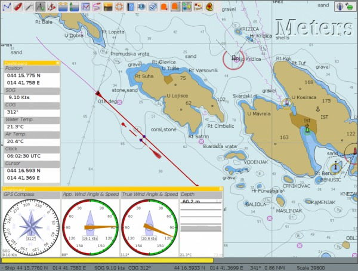
The same Dashboards docked left and bottom.
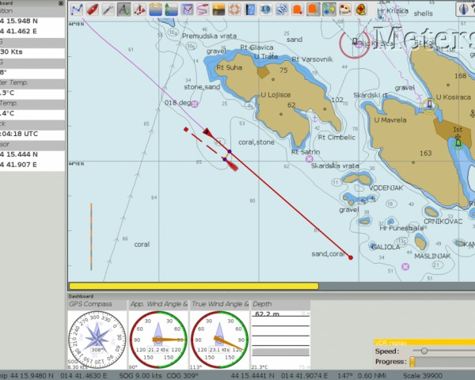
There is a grab handle in the SE corner of each Dashboard. Use it to resize each dialog. The graphics will change size, but not the text, which is handled separately. See further down.
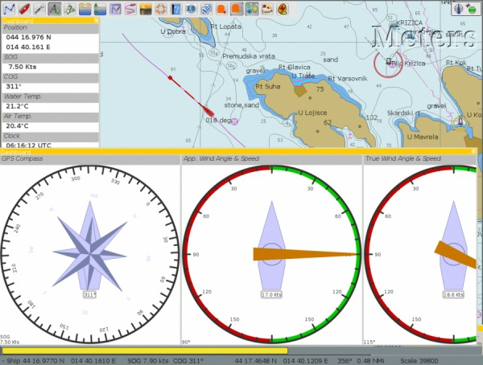
The Dashboard Tab
Once the Dashboard plugin is activated in the plugin tab, the Dashboard Icon will be available in the ToolBar and will work as an on/off toggle. The Preference button works exactly the same as described under “Dashboard Settings” below.
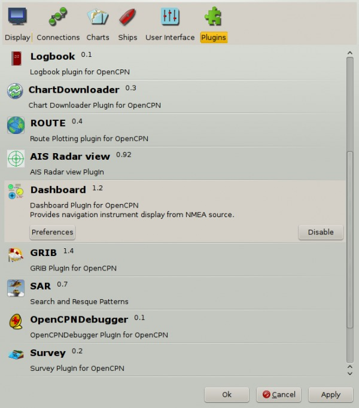
The “Enable” Button activates the plugin and shows the icon in the ToolBar. Once enabled, the “Disable” Button is displayed, as show above. If you press the “Preference” Button the Dashboard preferences dialog becomes available.
Dashboard settings
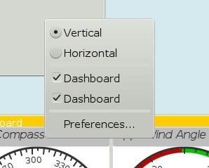
Right click anywhere in a Dashboard and a few options are displayed, in a small dialog. Above we have clicked on the vertical Dashboard. Make this Dashboard horizontal by clicking the “Horizontal” radio button. Stop displaying it by un-ticking the box in front of the first “Dashboard” line. Get it back by right clicking on the other Dashboard and tick the same box again.
Preferences
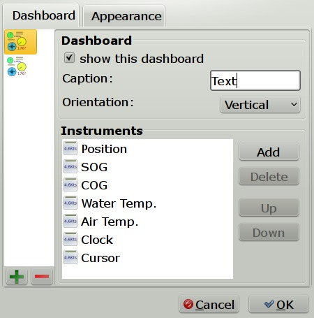
The Dashboard Tab
The Icons in the narrow pane to the left, represents the available instances. Click on an instance and the configured instruments shows in the “Instruments” pane.
“+” and “-“ Add or delete a Dashboard instance. Note, that an active Dashboard can not be deleted as the ”-” will be grayed out. Configure a new instance by “Add”-ing instruments in the “Instrument” pane.
Show this Dashboard If ticked just that Dashboard is shown. Toggling the icon displays all Dashboards.
Caption changes the name of the DashBoard from the default “Dashboard” to the Caption value. Due to a wxWidgets bug, this change is not instant, and requires docking the Dashboard or restarting OpenCPN, to work.
Orientation A dash board can be either Vertical or Horizontal. Vertical can be docked left or right, Horizontal can be docked top or bottom.
The “Instruments” pane. Shows the Instruments that are “active”, that will show up in that particular Dashboard .The instruments are selected with the buttons to the right.
Add. This button brings up the “Add Instrument” dialog where the available instruments can be highlighted and added to the Instruments Window.
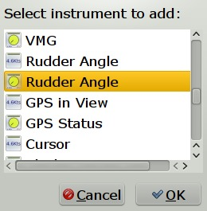
40 Instruments Available
| Position (text) |
| SOG (text) -Speed Over Ground |
| Speedometer (dial) |
| COG(text) - Course Over Ground |
| GPS Compass(dial) |
| STW(text) Speed Through Water |
| True HDG(text) Heading |
| Apparent WindAngle & Speed(dial) See MWV |
| App. Wind speed(text) |
| App. Wind speed(dial) |
| True Wind Angle & Speed(dial) |
| Depth(text)1 |
| Depth(dial)1 |
| Water Temp(text) |
| VMG(text)- Velocity Made Good to a waypoint |
| VMG(dial) |
| Rudder Angle(text) |
| Rudder Angle(dial) |
| GPS in view(text)- the number of satellites detected2 |
| GPS status(dial)2 |
| Cursor, shows the position of the cursor. |
| Clock, showing UTC from the NMEA stream, in most cases this is the gps time. |
| Sunrise/Sunset |
| Moon phase |
| Air Temp |
| App. Wind angle |
| True Wind angle |
| True Wind direction |
| True Wind Speed |
| True Wind Direction and speed |
| Magnetic Hdg |
| True Compass |
| Wind History |
| Trip Log |
| Sum Log |
| Barometric Pressure (dial) |
| Barometric Pressure (text) |
| Barometric History |
| From Ownship. Shows the vector from Ownship to the cursor. |
| Magnetic COG2 |
1. The DPT sentence is used, and transducer offset will be added to depth value, if available.
2. Linux note: GPS satellite info is not available if using gpsd.
The same informations is however available through the “xgps” command.
Delete
Highlight an entry in the Instrument Window to delete it.
Up / Down
Highlight an entry in the Instrument Window and change the order between the selected instruments. This order will also be the order between the instruments in the Dashboard dialog.
The Appearance Tab
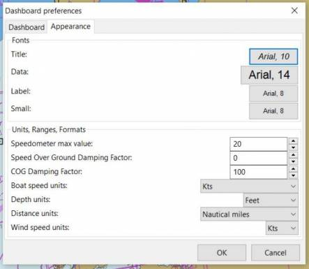
Use this tab to set fonts.
Dampen SOG and COG (IR Filter)
There are 2 parameters in the Dashboard→Preferences→Appearance dialog for damping of SOG and COG. A value of 1 means no filtering. Higher values mean ever slower response of the instrument. The max filter value is 100 which is pretty slow. This filter works almost exactly like a mechanical filter that uses an oil damped indicator dial. It will respond gradually to a change in course or speed. A typical filter value of 10 seems to work pretty well.
Units Selection
Select these parameters as suits your use. These controls together enable the user to adjust the view of the dashboard to suit individual needs.

Units Ranges and Formats Set the units to use, and the range of the speed dial.
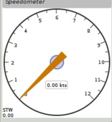 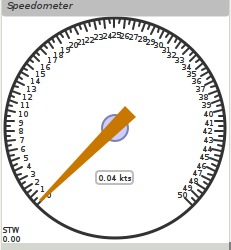
Wind History
The Wind History Instrument needs some further explanations.
The “wind history” instrument is meant to be run as a standalone (vertical) instrument.
Just define a separate dashboard and add it as the only instrument.
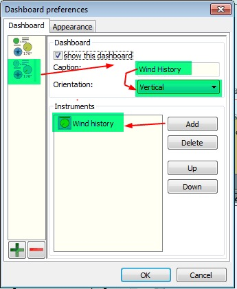
You can resize the Instrument with the mouse.
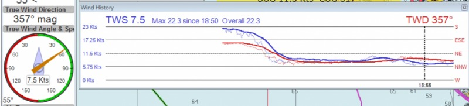
In real conditions, it monitors around 40 min of wind direction (red), as well as wind speed (blue), showing a vertical time line every 5 min (the example screen shot is a full-speed VDR replay).
The text on the top shows the current values, as it is displayed in the standard instruments (blue = wind speed data, TWS=True Wind Speed, red = direction, TWD = True Wind Direction).
Here is an explanation of the text line, left side (see screen shot):
TWS 7.5: true Wind Speed currently 7.5 kts
Max 22.3 kts since 18:50: this is the max Wind speed in the visible graphs, i.e. the last ~40 mins
Overall 22.3: the max wind speed since OpenCPN was started.
Right side above: TWD 357 degrees: True wind direction currently 357 degrees
The thin red/blue curves are the real direction/speed values, the thicker curves are smoothed values. Makes it easier to see trends.
There is some logic included :
The instruments zooms automatically as much as possible, always trying to show the whole visible curve;
Wind speed curve:
if your max (visible) wind speed is 10 kts, then your scale is from 0…11 kts (rounded upwards to the next full knot).
In the screen shot we had a mx of 22.3kts –> scale is 0…23 kts.
Wind direction:
The instrument scale shows +/- 90 degrees of the currently visible data values, but is limited to a total of 360 degrees.
If the wind is shifting through North (from 350, 355, 359, 002, 010, …) we're shifting the curve as well, meaning that there is NO vertical jump in the data from 360 degrees –> 0 degrees, and we do NOT loose all the continuity in the smoothed curves !
If you should happen to have more than a full 360 degrees cycle of wind direction in the recorded data (if you sail through a couple of dust devils ), I limited the max scale to 360 degrees, meaning that the curve will run out of the visible area on bottom or on top of the instrument.
Please note that you don't have to have the instrument “open” all the time. Once activated as initially described, you can close it, and simply reopen it on demand. You don't loose the curves, the instrument continues to collect the data. To make it visible again simply right click on an existing standard-dashboard, and click the “Wind History” Dashboard.
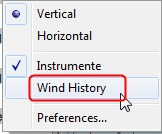
Night time Mode
In Windows, Night, F5, mode. The title bar on the floating dashboard window is a bit glaring (this mode is controlled by windows by way of a theme and is not possible to change from an application) . Dock the Dashboard into “docked mode” it will be less glaring. The best solution is to simply “dock” the dashboard window at night, either left or right. This brings the window decorations back under OCPN control, and we recently added logic to dim it in this mode.
Dashboard Time
- GPS clock - same as old Clock
- Local GPS clock - GPS clock with offset (see more below)
- Local CPU clock - Local CPU clock obtained from operating system
Local GPS clock has 2 options for time zone. On the appearance tab of the Dashboard preferences there is a new setting for “Local offset from UTC”. The default is 00:00. When the 00:00 is selected then Local GPS clock will display time in the time zone of the computer running OpenCPN. If that is not what you want then you can selected any other offset in 30 minute increments up to +/- 12 hours. That offset will be added to the GPS UTC time and the local computer time zone will be ignored.
Sunrise - Sunset
Sunrise/sunset are computed based on the date and lat/long from the GPS NMEA input data. They are not computed from the CPU clock or the ship's position. So unless you have a GPS connected then the times of sunrise/sunset are probably not going to be right. It has always been thus.